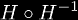

The function H-1(x) = x1/x is the inverse function of the infinite tetrate. So naturally, this means that over some domain, the composition will be equal to the identity function, and this domain is all real numbers (for the principal branch of the infinite tetrate). However, the other composition that should also be the identity is not. Namely  is only equal to the identity function for x < e, which means this composition yields a value that is different from the identity function for values x > e. This can be used to find answers to the age old question of what are the solutions of:
This can be written in closed form with the use of the infinite tetrate H(x) as follows:
but it is debatable whether or not e can be included in the definition. If it is included, then the function is continuous, if it is not included, then the function is discontinuous, but satisfies the more formal definition.
Using this definition of the exponential commutator, we can find a sequence of derivatives. From these we can form the Taylor series at x = e:
Using the analytic definition again, we find that the first derivative is:
which we can use repeatedly to find series expansions about any point. This along with the fact that EC(x) is its own inverse function, is all you need to solve for the coefficients of this series.
|
Copyright © 2010 Andrew Robbins ( |
|